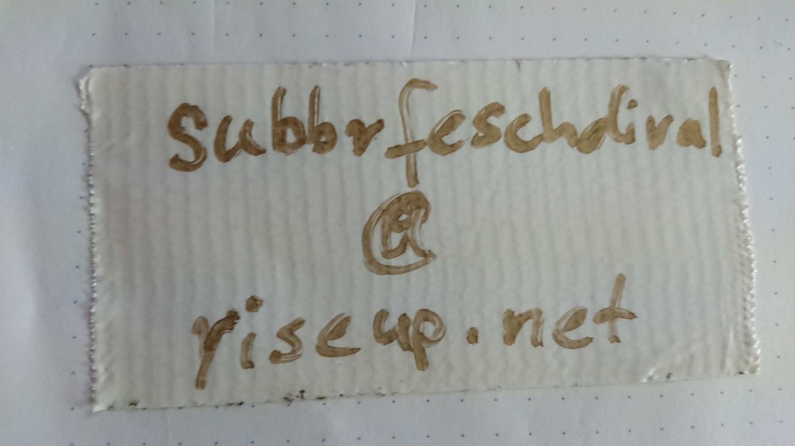

Ueber aktuelle Infos und Aenderungen wirst du über die Mail erfahren, die du beim Ticketkauf angegeben hast. Zusaetzlich wird die Seite staendig aktualisiert.
Too lazy too read:
* einen Tag und eine Nacht: 13.8.
* 100+ Leute
* Platz zum Zelten
* kein oeffentlicher Rave, nur geladene Persoenlichkeiten (du) und dein Hof (deine liebschden dus)
* super Musik(!)
* Getraenke gibts vor Ort (cheap cheap, versprochen), Futter nicht
* Muellentsorgung weitestgehend selbst
* Klo und Wasser wirds geben
* es gibt zwar Parkplaetze, aber begrenzt.
* sprecht euch ab, bildet Fahrgemeinschaften, fahrt Fahrrad oder kommt angewandert :)
Mehr infos
Unser Fest soll so driskriminierunsgfrei wie moeglich sein. Um dies zu erreichen, koennen wir alle etwas tun :)
Generell gilt das Konsens Prinzip: Nur ein eindeutiges JA ist ein Ja!
Kenne deine Grenzen und kommuniziere sie, wenn notwendig.
Achte die Grenzen anderer und frage nach wenn unklar ist, was gerade in Ordnung ist!
Achte darauf, was in deinem Umfeld passiert und frage im Zweifel lieber einmal zu viel nach, ob bei einer Person alles ok ist.
Achte auf deinen Konsum und den deiner Freund:innen.
Wie du dich am Veranstaltungsabend an uns wenden kannst, um Unterstuetzung zu erhalten, wird vor Beginn der Veranstaltung hier auf der Website bekannt gegeben und wird auch auf dem Gelaende ausgehaengt.
Bis dahin :)
mehr toller text kommt bestimmt bald
Kontakt:
